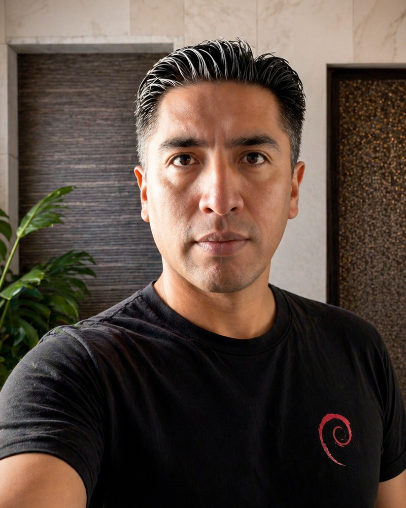

La Paz, Bolivia · 16°29′S 68°08′W
Daniel
Quisbert
Desarrollador de Software | Consultor GIS. Construyo software geoespacial y móvil, y enseño a otros a construirlo.

Trabajo · qué hago
Desarrollo
Aplicaciones móviles y sistemas con datos geoespaciales. Flutter, GeoServer, PostGIS, Spring Boot.
Formación
Cursos en vivo para profesionales de Latinoamérica. Proyectos reales, de cero a producción.
Consultoría
Arquitectura e implementación de soluciones GIS: servidores de mapas, bases de datos espaciales, apps de campo.
Divulgación
Creador de contenido tecnológico sobre mapas, GIS y desarrollo, para una audiencia de toda la región.
Cursos · en vivo, online
- Flutter + GISApps móviles con mapas, GPS y GeoServer
- GeoServerPublica y administra mapas en internet
- PostGISBases de datos espaciales profesionales
- WebmappingVisores de mapas para la web
Cada estudiante ingresa a GeoNexus, la comunidad geoespacial: WhatsApp · Telegram
Proyectos · selección
- ge0tic BoliviaGeografía y GIS de Bolivia, publicada desde 2016
- ge0tic MéxicoLa experiencia ge0tic para México
- ge0tic ColombiaGeografía y GIS de Colombia
- TapioEducación financiera: gastos e ingresos bajo control
- ARTECPlataforma académica: inscripciones y certificados verificables
- TallerPROGestión de talleres con rastreo vehicular en tiempo real
- Registraduría Nacional, ColombiaPortal gubernamental de alta disponibilidad
Trayectoria
Más de 14 años desarrollando software, con foco en tecnologías geoespaciales. He trabajado con organizaciones como FAO — Naciones Unidas, el INE y GeoBolivia, ENDE Corporación y como freelancer para empresas de Bolivia, Perú, Colombia y México. Publico aplicaciones propias en Google Play desde 2020, y hoy combino el desarrollo con la enseñanza: formo a profesionales de toda Latinoamérica en las herramientas que uso a diario.
Contacto
info@danielquisbert.com